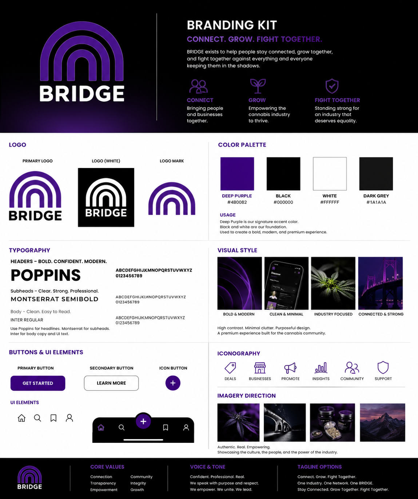

A detailed translation of Tori Patterson’s prototype response into Dillon’s product, UX, front-end, integration, QA, and launch-readiness plan.
Confirm what Tori loves, capture what she wants changed, distinguish immediate work from later-phase ideas, and make Dillon’s responsibilities and next outputs clear enough for the team to build without losing the product owner’s intent.
Evidence note: Otter used automated speaker labels. Tori is identified as Speaker 2 from first-person ownership and self-reference in the conversation. Companion-originated ideas are treated separately unless Tori explicitly supported them.
Bridge should connect legal markets across the country. State, location, product, category, brand, strain, and favorites filters should help people see national movement without overwhelming the default feed.
Dispensary profiles should connect people to live menus, ordering, directions, and relevant social or marketplace channels. The point is to make discovery useful and support real business outcomes.
The network can include qualified banks, transporters, testing labs, manufacturers, construction teams, HVAC providers, electricians, and other industry services, with appropriate credentials and references.
The conversation explored an early brand price near $349 to $350 per month, an introductory free period, annual commitment, and grandfathered pricing. These are testable hypotheses, not final commercial terms.
Brands and businesses must be recruited while consumer and industry awareness grows through events and street-level activation. The launch plan should avoid an empty-network problem on either side.
A future HR-support concept may create value, but employee handbooks, advice, privacy, role access, and legal exposure make it inappropriate for the MVP without a dedicated legal and operating model.
Bridge becomes the verified, nationwide operating network where cannabis businesses, professionals, and consumers can discover the right people and products, publish to the right audiences, protect sensitive information, and move from signal to useful action.
| Feedback signal | Disposition | Dillon’s product and front-end action |
|---|---|---|
| Keep the purple, dark, Bridge-led direction | Keep | Lock the official palette and mark as the design-system source, then improve hierarchy, imagery, motion, contrast, and component consistency. |
| Navigation feels jumbled | Refine | Rework the application map around Home or Profile, Explore, Create, and Community News; test labels before build acceptance. |
| Exchange should be Explore | Adopt | Update route language, wayfinding, page purpose, and future acceptance fixtures around Explore. |
| Homepage needs stronger visual hierarchy | Refine | Reduce hero dominance, add purposeful imagery and interaction, and prove the page works at desktop and mobile widths. |
| Upload existing assets and post promotions | Phase 2–4 | Specify upload, asset, content-type, validation, audience, preview, save, and publishing states; align storage and permissions with Miraj. |
| Multiple audiences with protected information | Decision | Produce the audience and field-visibility matrix, then encode it into page states, data contracts, tests, and review examples. |
| Nationwide discovery, filters, and favorites | Phase 2–4 | Design Explore filters, saved preferences, favorite views, state/category pathways, empty states, and ranking assumptions. |
| Verified profiles need current contacts | Phase 2–4 | Map profile ownership, contact roles, re-verification prompts, renewal, changes, and audit history. |
| Pinterest/news feed versus vertical feed | Prototype | Create side-by-side responsive concepts and recommend the option that best supports comprehension, scanning, and accessible mobile use. |
| $349–$350 and two-sided launch | Validate | Turn the pricing and launch concepts into research questions, landing-message tests, onboarding assumptions, and measurable pilot criteria. |
| HR support concept | Later | Keep outside the MVP. Define only after legal review, privacy requirements, partner responsibility, and access controls are established. |
My Phase 2 responsibility is to turn Tori’s enthusiasm and detailed feedback into one approved product package that the implementation team can use without guessing.
Define Home or Profile, Explore, Create, Community News, verification, directory, consumer utility, and administration as named surfaces with a clear purpose and handoff path.
Output: approved route and screen mapMap what consumers, industry professionals, retailers, dispensaries, brands, service providers, representatives, and administrators can see, publish, edit, verify, and manage.
Output: role and field-permission contractDetail the steps for discovering a business, viewing a verified profile, creating and targeting a post, uploading an asset, finding a product or service, ordering from a dispensary, and confirming profile contacts.
Output: journey maps and acceptance criteriaBuild a responsive feed comparison, revised homepage hierarchy, clearer navigation, simplified search, category controls, filter patterns, and favorites behavior.
Output: review-ready responsive prototypesPrevent enthusiasm from becoming uncontrolled scope by giving every idea a phase, owner, dependency, acceptance signal, and review date.
Output: phased backlog and decision recordTranslate the approved experience into a reusable purple product system and align every screen with Miraj’s authentication, data, storage, permissions, API, and environment work.
Onboarding and verification: age and location, role selection, profile setup, EIN or business evidence, review status, renewal, and recovery.
Explore and profiles: state, category, product, brand, service, and favorites filters with public and verified-business views.
Create and publish: direct asset uploads, Promotion content, audience selection, protected fields, preview, save, and publish states.
Consumer utility: dispensary menu, ordering, directions, and approved external profile links.
Operations: contact re-verification, notifications, reporting, moderation entry points, and administrator queues.
Connect approved APIs, authentication, storage, and data services in reviewed vertical slices.
Test every role and permission boundary, including protected pricing and business-only information.
Verify responsive behavior, keyboard access, screen-reader basics, contrast, motion preferences, and recovery states.
Test forms, uploads, search, filters, favorites, notifications, ordering handoffs, verification, and moderation workflows.
Turn failures into evidence-backed tickets and maintain a clean demo path for Tori and the team.
Show one complete journey at the end of each vertical slice.
Verify content, permissions, responsive states, and integration behavior.
Record Tori’s outcome and select the next prioritized slice.
The first market should contain enough brands, retailers, services, and active users to demonstrate a useful network instead of an empty platform.
I will translate acquisition assumptions into measurable activation, retention, content, connection, and conversion signals so the team can decide where to invest next.
New ideas enter the decision log with value, risk, owner, dependency, phase, and acceptance criteria before they become build commitments.
I turn Tori’s product vision and prototype feedback into a usable, role-based product experience, then help carry that experience through requirements, front-end implementation, integration, QA, launch readiness, and the next-phase backlog.
Product vision, brand direction, priority decisions, and milestone acceptance.
Backend, platform architecture, authentication, data, storage, permissions, and APIs.
Commercial scope, milestone review, coordination, communication, and feedback follow-through.
Record Tori’s positive direction and the official purple system as the current working design source.
Update the application map around Home or Profile, Explore, Create, and Community News.
Create the role, audience, protected-field, and verification matrix.
Build the revised homepage hierarchy and side-by-side feed concepts.
Specify uploads, Promotion content, multi-audience publishing, and protected pricing states.
Specify nationwide Explore, state/category filters, favorites, and consumer profile utility.
Align the approved journeys and data contracts with Miraj.
Package the reusable purple design system and responsive component patterns.
Select and build the first complete Phase 3 vertical slice with acceptance fixtures.
Review the working journey with Tori, record acceptance, and choose the next prioritized slice.
Working basis: the full July 23 Otter transcript, Tori’s July 31 written response, Dillon’s six-milestone execution plan, the official Bridge brand source, the July 27 current-state report, and the July 28 purple-direction milestone plan. Future commercial, legal, compliance, and platform-policy decisions remain subject to the responsible owner’s approval.
